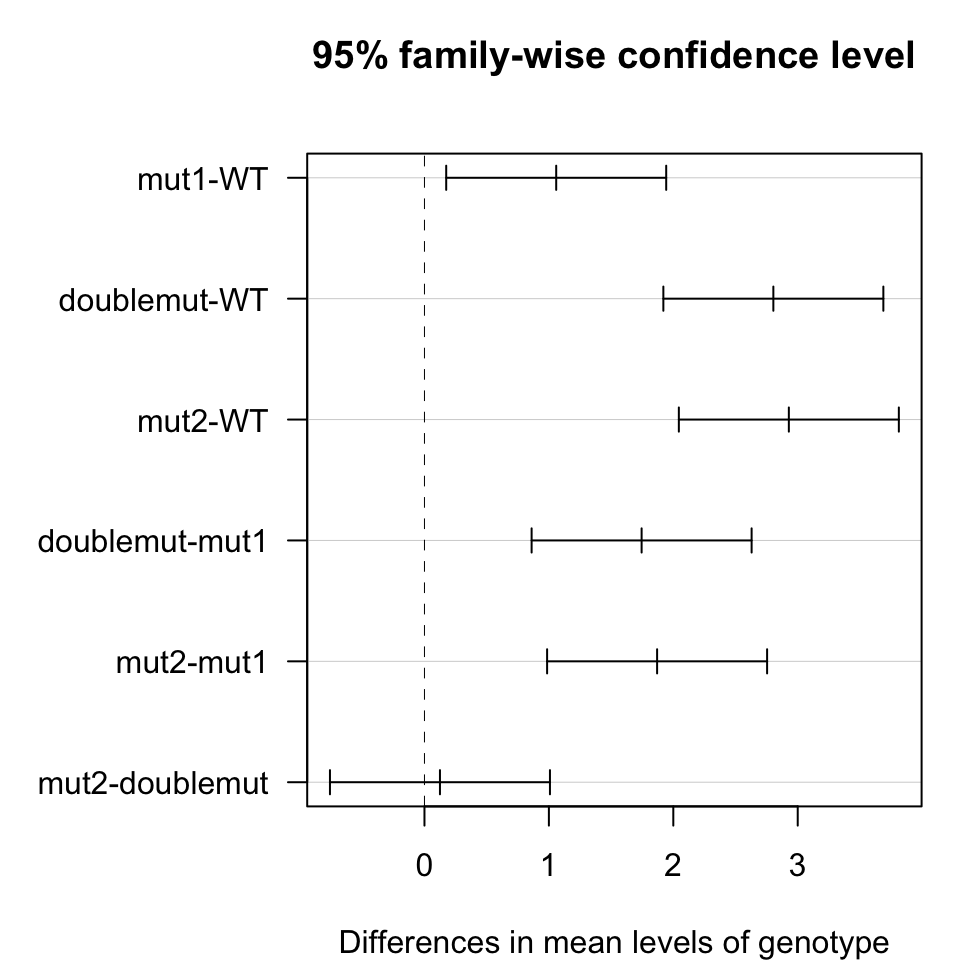

# insert data
df <- data.frame(genotype = c("WT", "WT", "WT", "mut1", "mut1", "mut1", "mut2", "mut2", "mut2", "doublemut", "doublemut", "doublemut"),
control_gene = c(143.2632804, 143.2016045, 121.5441674, 120.8509654, 135.2941841, 146.6159225, 147.3569572, 159.5510244, 41.53608903, 112.2483313, 145.9524333, 142.2499418),
target_gene = c(0.045530984, 0.029892154, 0.018934757, 0.057283056, 0.053640269, 0.072897732, 0.235321652, 0.2810932, 0.067345158, 0.1904679, 0.271456991, 0.158710149)
)
df## genotype control_gene target_gene
## 1 WT 143.26328 0.04553098
## 2 WT 143.20160 0.02989215
## 3 WT 121.54417 0.01893476
## 4 mut1 120.85097 0.05728306
## 5 mut1 135.29418 0.05364027
## 6 mut1 146.61592 0.07289773
## 7 mut2 147.35696 0.23532165
## 8 mut2 159.55102 0.28109320
## 9 mut2 41.53609 0.06734516
## 10 doublemut 112.24833 0.19046790
## 11 doublemut 145.95243 0.27145699
## 12 doublemut 142.24994 0.15871015# target gene vs control gene
df$diff <- log2(df$target_gene) - log2(df$control_gene)
# either way is the same
cbind(log2(df$target_gene) - log2(df$control_gene),
log2(df$target_gene / df$control_gene))## [,1] [,2]
## [1,] -11.619533 -11.619533
## [2,] -12.225993 -12.225993
## [3,] -12.648156 -12.648156
## [4,] -11.042833 -11.042833
## [5,] -11.300496 -11.300496
## [6,] -10.973880 -10.973880
## [7,] -9.290465 -9.290465
## [8,] -9.148754 -9.148754
## [9,] -9.268575 -9.268575
## [10,] -9.202930 -9.202930
## [11,] -9.070559 -9.070559
## [12,] -9.807818 -9.807818# test whether it is significantly different from normal distribution
shapiro.test(x = df$diff)##
## Shapiro-Wilk normality test
##
## data: df$diff
## W = 0.87117, p-value = 0.06763# visual inspection
library(ggpubr)
ggqqplot(df$diff)# test whether group variances are different
library(car)
leveneTest(diff ~ genotype, data = df) ## Levene's Test for Homogeneity of Variance (center = median)
## Df F value Pr(>F)
## group 3 0.9722 0.4522
## 8# if assumptions are met fit anova
fit <- aov(formula = diff ~ genotype, data = df)
summary(fit)## Df Sum Sq Mean Sq F value Pr(>F)
## genotype 3 18.089 6.030 52.74 1.29e-05 ***
## Residuals 8 0.915 0.114
## ---
## Signif. codes: 0 '***' 0.001 '**' 0.01 '*' 0.05 '.' 0.1 ' ' 1# if anova test is significant perform multiple pair-wise comparisons
test <- TukeyHSD(fit, ordered = TRUE)
test## Tukey multiple comparisons of means
## 95% family-wise confidence level
## factor levels have been ordered
##
## Fit: aov(formula = diff ~ genotype, data = df)
##
## $genotype
## diff lwr upr p adj
## mut1-WT 1.0588244 0.1747417 1.942907 0.0207992
## doublemut-WT 2.8041249 1.9200422 3.688208 0.0000352
## mut2-WT 2.9286292 2.0445465 3.812712 0.0000255
## doublemut-mut1 1.7453005 0.8612179 2.629383 0.0010280
## mut2-mut1 1.8698048 0.9857221 2.753887 0.0006448
## mut2-doublemut 0.1245043 -0.7595784 1.008587 0.9675757# plot mean differences with 95% confidence intervals
par(mar=c(4,8,4,1))
plot(test, las=1)
http://www.sthda.com/english/wiki/wiki.php?title=normality-test-in-r
http://www.sthda.com/english/wiki/compare-multiple-sample-variances-in-r
http://www.sthda.com/english/wiki/wiki.php?title=one-way-anova-test-in-r
The dataset was provided by Magdalena Murawska (LMU, BMC, Ladurner group)